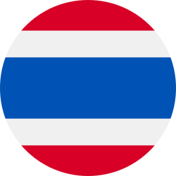

Hewan Peliharaan Pemimpin Dunia




Tak ada satu pun orang di dunia ini yang tidak merasa gemas jika melihat tingkah laku hewan lucu nan menggemaskan. Di hadapan hewan-hewan ini, raja, ratu, dan pemimpin dunia seolah memperlihatkan sosok mereka yang berbeda. Berikut ini adalah hewan beruntung yang terpilih untuk mendampingi sejumlah agenda kenegaraan. Dan, yang lebih utama, menjadi teman pelepas lelah para pemimpin negara.


Pemimpin Negara
Pilih Bendera untuk mengetahui cerita Pemimpin Negara bersama hewan peliharaannya.
Pilih Negara lain
Kepala Project
Irwan Nugroho
Naskah
Fajar Yusuf R
Editor
Dieqy Hasbi Widhana
Penyelaras Bahasa
Habib Rifai
Frontend Developer
Dedi Arief Wibisono
Ilustrasi
Edi Wahyono